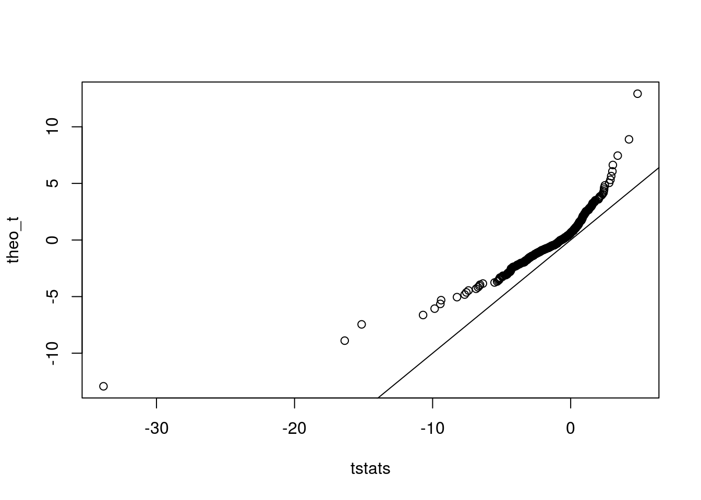
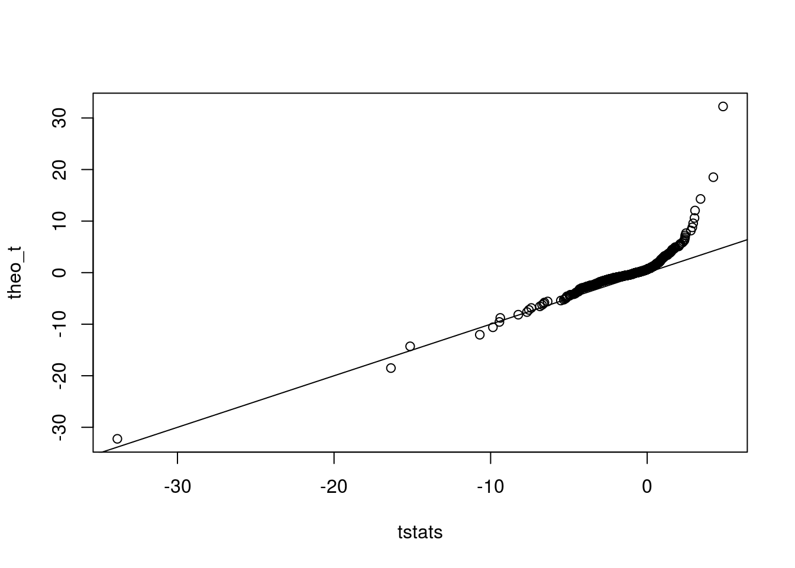

Here, I investigate the \(t\) approximation.
set.seed(6)
library(tidyverse)## Loading tidyverse: ggplot2
## Loading tidyverse: tibble
## Loading tidyverse: tidyr
## Loading tidyverse: readr
## Loading tidyverse: purrr
## Loading tidyverse: dplyr## Conflicts with tidy packages ----------------------------------------------## filter(): dplyr, stats
## lag(): dplyr, statsmat <- t(as.matrix(read.csv("../../reproduce_ruv3/Output/gtex_tissue_gene_reads_v6p/muscle.csv",
header = TRUE)[, -c(1,2)]))sout <- seqgendiff::poisthin(mat = mat, nsamp = 6, ngene = 1000,
gselect = "mean_max",
prop_null = 1)
Y <- log2(sout$Y + 1)
mout <- vicar::mouthwash(Y = Y, X = sout$X)## Number of confounders not provided so being estimated with package sva.Take estimated confounder and see if resulting t statistics are t-distributed.
XZ <- as_data_frame(cbind(sout$X, mout$Zhat))
names(XZ) <- c("Intercept", "Treatment",
paste0(rep("Confounder", ncol(mout$Zhat)), 1:ncol(mout$Zhat)))
lmout <- limma::lmFit(obj = t(Y), design = XZ)
tstats <- lmout$coefficients[, 2] / (lmout$stdev.unscaled[, 2] * lmout$sigma)
## Sanity check
# which_look <- 9
# tempdat <- cbind(Y[, which_look], XZ)
# names(tempdat)[1] <- "Y"
# coef(summary(lm(Y ~ Intercept + Treatment + Confounder1 + Confounder2, data = tempdat)))
# tstats[which_look]QQ plot:
df_look <- nrow(XZ) - ncol(XZ)
theo_t <- qt(ppoints(length(tstats)), df = df_look)
qqplot(x = tstats, y = theo_t)
abline(0, 1)
It doesn’t look too bad. Maybe the theoretical \(t\) has slightly larger tails and has a slightly larger variance. What was the variance inflation term?
mout$xi## [1] 0.9501llike <- function(x, degrees_freedom) {
sum(dt(x, df = degrees_freedom, log = TRUE))
}
oout <- stats::optim(par = df_look, x = tstats,
fn = llike, method = "Brent", lower = 0, upper = 30,
control = list(fnscale = -1))
oout$par## [1] 1.986df_look## [1] 3So the degrees of freedom I use is too small. This makes sense given that I see the normal perform better, but it’s weird since I would a priori believe that the df I use is too large. Let’s look at the QQplot with this new df. It does look a little better.
theo_t <- qt(ppoints(length(tstats)), df = oout$par)
qqplot(x = tstats, y = theo_t)
abline(0, 1)
sessionInfo()## R version 3.3.2 (2016-10-31)
## Platform: x86_64-pc-linux-gnu (64-bit)
## Running under: Ubuntu 16.04.2 LTS
##
## locale:
## [1] LC_CTYPE=en_US.UTF-8 LC_NUMERIC=C
## [3] LC_TIME=en_US.UTF-8 LC_COLLATE=en_US.UTF-8
## [5] LC_MONETARY=en_US.UTF-8 LC_MESSAGES=en_US.UTF-8
## [7] LC_PAPER=en_US.UTF-8 LC_NAME=C
## [9] LC_ADDRESS=C LC_TELEPHONE=C
## [11] LC_MEASUREMENT=en_US.UTF-8 LC_IDENTIFICATION=C
##
## attached base packages:
## [1] stats graphics grDevices utils datasets methods base
##
## other attached packages:
## [1] dplyr_0.5.0 purrr_0.2.2 readr_1.0.0 tidyr_0.6.1
## [5] tibble_1.2 ggplot2_2.2.1 tidyverse_1.1.1
##
## loaded via a namespace (and not attached):
## [1] Rcpp_0.12.11 lubridate_1.6.0 lattice_0.20-34
## [4] assertthat_0.2.0 rprojroot_1.2 digest_0.6.12
## [7] psych_1.6.12 foreach_1.4.3 truncnorm_1.0-7
## [10] R6_2.2.0 plyr_1.8.4 backports_1.0.5
## [13] stats4_3.3.2 RSQLite_1.1-2 evaluate_0.10
## [16] sva_3.18.0 httr_1.2.1 vicar_0.1.6
## [19] pscl_1.4.9 lazyeval_0.2.0 readxl_0.1.1
## [22] annotate_1.48.0 S4Vectors_0.8.11 Matrix_1.2-8
## [25] rmarkdown_1.3 splines_3.3.2 stringr_1.2.0
## [28] foreign_0.8-67 REBayes_0.73 munsell_0.4.3
## [31] broom_0.4.2 modelr_0.1.0 BiocGenerics_0.16.1
## [34] mnormt_1.5-5 SQUAREM_2016.8-2 mgcv_1.8-17
## [37] htmltools_0.3.5 codetools_0.2-15 IRanges_2.4.8
## [40] XML_3.98-1.5 MASS_7.3-45 grid_3.3.2
## [43] nlme_3.1-131 jsonlite_1.3 xtable_1.8-2
## [46] gtable_0.2.0 DBI_0.6 magrittr_1.5
## [49] scales_0.4.1 stringi_1.1.2 reshape2_1.4.2
## [52] genefilter_1.52.1 doParallel_1.0.10 limma_3.26.9
## [55] seqgendiff_0.1.0 xml2_1.1.1 iterators_1.0.8
## [58] tools_3.3.2 forcats_0.2.0 Biobase_2.30.0
## [61] hms_0.3 parallel_3.3.2 survival_2.41-2
## [64] yaml_2.1.14 AnnotationDbi_1.32.3 colorspace_1.3-2
## [67] ashr_2.0.5 rvest_0.3.2 memoise_1.0.0
## [70] knitr_1.15.1 haven_1.0.0This site was created with R Markdown